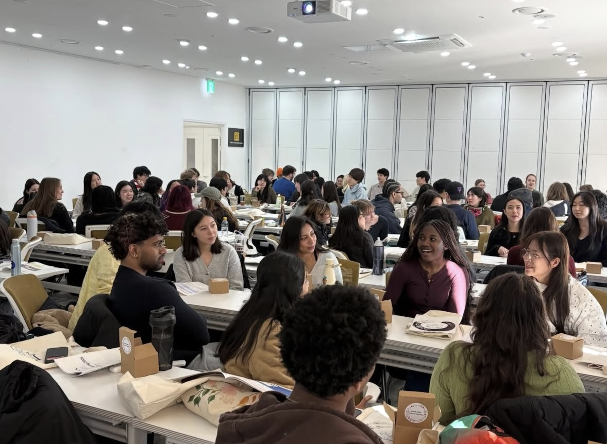
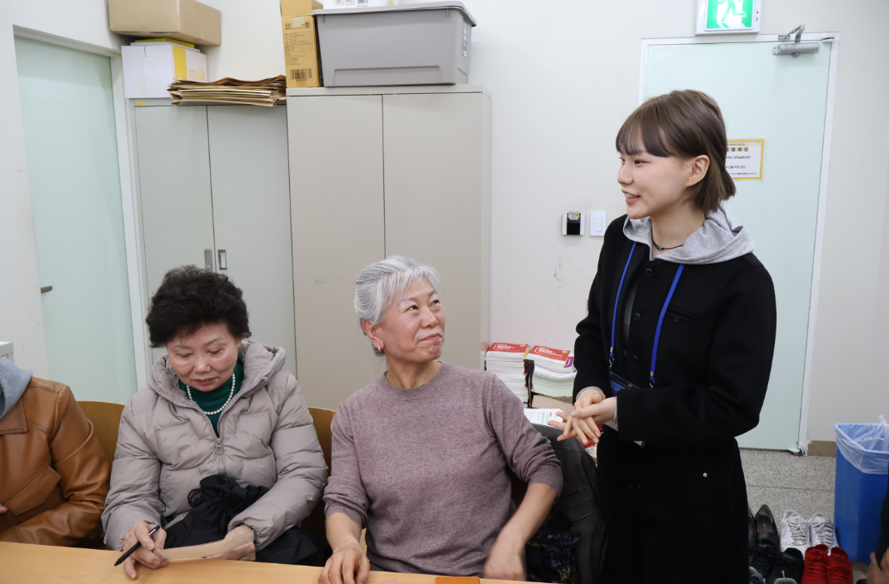

고등학교에서 관광학을 전공하며 서비스의 기틀을 잡고, 현재는 영미인문학을 전공하며 텍스트 속 화자의 의도를 정밀히 파악하는 공부를 하고 있습니다.
이를 통해 실생활 속에서도 상대방의 말을 표면적으로 이해하는 것을 넘어, 표정과 태도에 담긴 비언어적 표현 또한 읽어내어 '1+α'의 도움을 건넬 줄 아는 것이 제 강점입니다.
실제 『햄릿』을 분석하며 인물의 숨은 의도를 고민하던 습관은, 아르바이트 현장에서 손님의 눈빛과 표정 하나만으로 필요한 것을 알아채는 세심함이 되었습니다.
호텔과 웨딩홀에서 근무하며 긴장하신 혼주분께 따뜻한 차를 먼저 내어드리거나 아이 동반 손님께 유아용품을 미리 챙겨드렸을 때 만족해하시는 것을 보면서, 저는 관찰이란 조용하지만 가장 능동적인 배려임을 배웠습니다.
이러한 깨달음은 대외활동에서도 구체적인 성과로 이어졌습니다. 야학교에서 어르신들께 영어를 가르쳐드리며, 진정한 수업은 문법 하나 더 가르쳐드리는 데 급급한 것이 아니라,
용기 내 펜을 잡은 어르신들의 긴장을 깊이 이해하고 도전에 대한 두려움을 덜어드리는 것에서부터 시작된다는 것을 느꼈습니다. 이 결과, 이번 4월 중등 검정고시에서 세 분이 합격하시는 결실을 맺었습니다.
또한 CIEE 서울메이트로서 미국 대학생들의 한국 적응을 도울 때도, 미국 학생들이 한국의 식당 예절이나 에스컬레이터 한 줄 서기 같은 불문율 등에 당황하기 전, 주의사항을 미리 알려주며
한국 생활에 자연스럽게 스며들도록 도왔습니다. 저는 이러한 경험들을 바탕으로, 늘 한발짝 먼저 나가서 기다리는 승무원이 되고자 합니다.
문과대학 / 3학년 재학 중
고등학교 1학년부터 웨딩홀, 서빙, 주방보조, 팝업스토어 판매직 등 다양한 직종 근무
연세대학교, 한양대학교로 교환학생을 온 미국 대학생들과의 언어 교류 및 적응 지원

다시 배움을 시작하고자 하시는 어르신들께 매주 1회 중등영어 수업 진행

배경: 서울메이트들과 미국 대학생들이 처음 만나는 'Meet-Up Day' 활동을 기획함.
역할: 아이스브레이킹을 위한 스피드게임 기획 및 PPT 제작, 게임 진행 보조
결과: 참여 학생 만족도 95% 달성
배경: 총 5명의 야학교 영어과 교사들과 함께 영어 수업 운영 방식 논의 및 개발
역할: 수업 실태 공유 및 학생분들의 적극적인 수업 참여를 위한 제도 제안
결과: 2026년 4월 중등 검정고시에서 중등반 총원 8분 중 3분 검정고시 합격
배경: 2026학년도 1학기 수업
내용: AI를 활용한 글쓰기, 텍스트 분석, 바이브 코딩
이 포트폴리오: 수업 결과물을 계속 추가할 예정
이 공간에 수업에서 만든 콘텐츠와 글을 올릴 예정입니다.